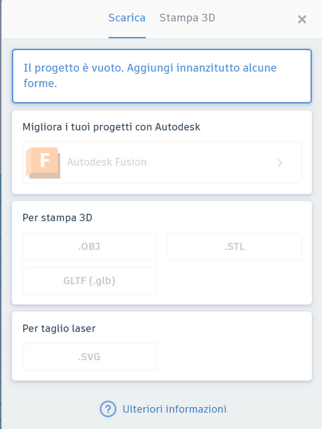
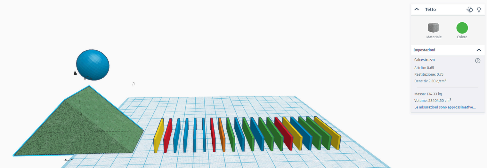

Dal modello
alla stampa
Import ed export, i formati SVG, STL e OBJ, lo slicer, le regole di stampabilità e le simulazioni fisiche di Sim Lab.
Cosa vedremo
come portare modelli dentro e fuori da TinkerCAD: formati supportati, limiti di dimensione dei file e opzioni di condivisione con la community.
SVG per la grafica vettoriale 2D, STL per la stampa 3D, OBJ per lo scambio tra software: cosa contengono e quando usare ciascuno.
il programma che affetta il modello in strati orizzontali e lo traduce in G-code: altezza layer, riempimento interno e supporti.
sbalzi, pareti sottili, oggetti sospesi, testo minuscolo: gli errori che trasformano una buona idea in una stampa fallita.
simulare materiali e gravità nella scena, poi mettere tutto in pratica progettando una targhetta stampabile.
Portare modelli dentro e fuori
TinkerCAD non è un'isola: i file che entrano ed escono lo collegano al disegno vettoriale, agli altri CAD, alle stampanti 3D e al taglio laser.
Import
Carica geometrie create altrove: file STL e OBJ modellati in altri software CAD, oppure SVG da estrudere come profili 2D. Tieni il file sotto i 25 MB e, se serve, riduci la complessità del modello prima di caricarlo.
Export
Scarica l'intero progetto o solo le forme selezionate, nel formato adatto alla destinazione: STL per la stampa 3D, OBJ per passare il modello ad altri programmi, SVG per il taglio laser dei contorni.

Condivisione
Oltre al download: link diretto al progetto, pubblicazione nella community di TinkerCAD e invio del modello direttamente alle stampanti 3D compatibili collegate.
Importare ed esportare bene è il ponte tra progettazione, stampa e riuso: un modello scaricato dalla community può diventare la base di partenza del tuo progetto.
SVG: grafica vettoriale
SVG (Scalable Vector Graphics) è un formato 2D aperto, basato su XML: descrive le forme come curve matematiche, non come griglie di pixel. Puoi ingrandirlo quanto vuoi senza perdere qualità.
A cosa serve qui
In TinkerCAD un SVG importato diventa un profilo piatto da estrudere in altezza: un logo disegnato in Inkscape o Illustrator può trasformarsi in un portachiavi in rilievo. Lo stesso file, senza estrusione, è il formato standard per il taglio laser.
Usa tracciati chiusi e converti i testi in tracciato prima dell'export: un profilo aperto o un font mancante producono forme incomplete all'import.
Profilo 2D vettoriale → estrusione in altezza: da disegno piatto a solido 3D
Un file STL descrive solo la superficie esterna: una rete chiusa di triangoli
STL: la mesh di triangoli
STL è lo standard di fatto della stampa 3D dal 1987: rappresenta la superficie del modello come una mesh di triangoli, senza colori, materiali né unità di misura.
Perché è ovunque
Ogni slicer — Cura, PrusaSlicer, Bambu Studio — lo legge senza problemi: esporti da TinkerCAD, apri nello slicer e ottieni il G-code. La semplicità del formato è la sua forza.
Una mesh con buchi (non "watertight") confonde lo slicer: interno ed esterno non sono più distinguibili e la stampa fallisce. TinkerCAD esporta mesh chiuse, ma i file scaricati dal web vanno verificati.
OBJ e la scelta del formato
OBJ: il passaporto 3D
Formato aperto nato in casa Wavefront e letto da quasi tutti i software di modellazione e rendering. A differenza dell'STL può trasportare materiali e texture (nel file .mtl allegato): è la scelta giusta per portare un modello in Blender, colorarlo e renderizzarlo.
2D vettoriale: contorni precisi da tagliare, incidere o estrudere.
mesh di triangoli: il formato che ogni slicer capisce al volo.
geometria più materiali e texture, da riaprire in altri software.
Prima di stampare
Da modello a istruzioni macchina
Cura, PrusaSlicer o Bambu Studio affettano il modello in strati orizzontali e generano il G-code: la lista di movimenti, velocità e temperature che la stampante eseguirà riga per riga.
Altezza layer
0,2 mm è lo standard: buon compromesso tra qualità e tempo. A 0,1 mm i dettagli migliorano ma la durata di stampa raddoppia; 0,3 mm va bene per prototipi veloci.
Infill
L'interno non viene stampato pieno ma con una trama (griglia, nido d'ape). Il 15–20% basta per oggetti decorativi; si sale al 40–60% solo per parti sottoposte a sforzi.
Supporti e adesione
I supporti sostengono gli sbalzi oltre 45° e si staccano a fine stampa. Brim e raft allargano la base per far aderire meglio il primo layer al piano.
Forme che tradiscono la stampante
Sbalzi oltre 45°
Ogni layer si appoggia su quello sotto: le sporgenze oltre 45° rispetto alla verticale stampano nel vuoto e collassano. Soluzioni: ruotare il modello, smussare la sporgenza o attivare i supporti nello slicer.
Pareti sottili
Sotto il millimetro lo slicer può ignorare la parete o stamparla fragile. Progetta spessori di almeno 1,2–2 mm: permettono più passate di estrusore e un pezzo che non si spezza in mano.
Oggetti sospesi
Ogni parte del modello deve toccare il piano o essere sostenuta: una sfera lasciata "fluttuare" a mezz'aria in TinkerCAD produce solo un groviglio di filamento. Usa la vista laterale per verificare l'appoggio.
Un modello bello sullo schermo non è automaticamente stampabile: la gravità e il filamento fuso non perdonano le geometrie impossibili.
Dimensioni, testo e tolleranze
Scala giusta
Verifica il volume di stampa della macchina: un oggetto troppo grande va ridotto in scala o tagliato in parti da unire dopo. All'estremo opposto, i dettagli sotto 0,2 mm spariscono: l'ugello standard deposita linee larghe 0,4 mm.
Testo leggibile
Le scritte in rilievo funzionano da circa 5–6 mm di altezza del carattere, con rilievo o incavo di almeno 0,6 mm. Sotto queste misure il testo diventa una macchia di plastica illeggibile.
Fori e incastri
La plastica fusa si espande leggermente: un foro stampato risulta più stretto di 0,2–0,4 mm rispetto al progetto. Per far incastrare due pezzi lascia sempre un gioco di 0,2–0,3 mm tra le superfici.
Prima di un progetto importante stampa un piccolo campione con testi, fori e pareti di misure diverse: dieci minuti di stampa che risparmiano ore di tentativi falliti.
Simulare materiali e gravità
Sim Lab è l'ambiente di simulazione fisica integrato in TinkerCAD: premi Play e la scena che hai costruito prende vita seguendo le leggi della fisica.
Materiali
Ogni oggetto può ricevere un materiale fisico (plastica, legno, calcestruzzo, gomma) che ne determina massa e comportamento durante la simulazione. Cambiare materiale cambia il modo in cui l'oggetto cade, rimbalza o si ferma.
Statico/dinamico
Un oggetto impostato come statico resta fisso e funge da piano o da ostacolo. Uno dinamico è soggetto alla gravità e alle collisioni: ideale per simulare cadute, rimbalzi e interazioni tra più oggetti in scena.
Gravità
Sim Lab permette di scegliere il corpo celeste: Terra (9,8 m/s²), Luna, Marte, Giove. Questo permette di osservare come cambia il comportamento degli stessi oggetti in ambienti con accelerazione gravitazionale diversa, ottimo per lezioni di fisica.
Una sfera di plastica su un piano inclinato di calcestruzzo: cambia materiale e pianeta, poi confronta caduta, rimbalzo e attrito. Fisica osservabile senza laboratorio.

Una targhetta stampabile
Applica le regole appena viste: il foro reale sarà più stretto del progetto e un testo sotto i 6 mm diventa illeggibile. Se la stampa riesce, prova una variante con i bordi arrotondati.
Pronto per stampare.
Formati, slicer e regole di stampabilità: il modello ora può uscire dallo schermo. Il passaggio finale è didattico: creare lezioni, aggiungere studenti e assegnare attività.